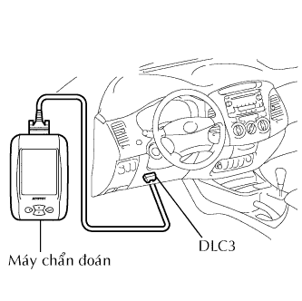

BỘ CHẤP HÀNH PHANH > KIỂM TRA TRÊN XE |
| 1. NỐI MÁY CHẨN ĐOÁN |
|  |
Nối máy chẩn đoán với giắc DLC3.
Khởi động động cơ và để nó chạy không tải.
Hãy chọn chế độ thử kích hoạt trên máy chẩn đoán.
| 2. KIỂM TRA SỰ HOẠT ĐỘNG CỦA MÔTƠ BỘ CHẤP HÀNH |
Bật rơle môtơ ON và kiểm tra tiếng kêu hoạt động của môtơ bộ chấp hành.
Tắt rơle môtơ OFF.
Đạp hết bàn đạp phanh và giữ nó trong xấp xỉ 15 giây. Kiểm tra rằng độ sâu ban đầu của bàn đạp vẫn không đổi trong thời gian 15 giây.
Bật rơle môtơ ON và kiểm tra rằng bàn đạp không rung.
Tắt rơle môtơ OFF và nhả bàn đạp.
| 3. KIỂM TRA HOẠT ĐỘNG CỦA BÁNH XE TRƯỚC PHẢI |
Đạp bàn đạp phanh càng nhiều càng tốt, hãy thực hiện các thao tác sau.
Bật đồng thời các van điện từ SFRH và SFRR, và kiểm tra rằng bàn đạp không thể đạp xuống thêm nữa.
Tắt đồng thời các van điện từ SFRH và SFRR, và kiểm tra rằng bàn đạp có thể đạp xuống thêm nữa.
Bật rơle môtơ ON. Kiểm tra rằng bàn đạp trở về vị trí "Nhấn xuống càng nhiều càng tốt".
Tắt rơle môtơ OFF và nhả bàn đạp.
| 4. KIỂM TRA HOẠT ĐỘNG CỦA BÁNH XE KHÁC |
Dùng các quy trình giống như được mô tả cho bánh xe trước phải, kiểm tra các van điện từ của các bánh xe khác.